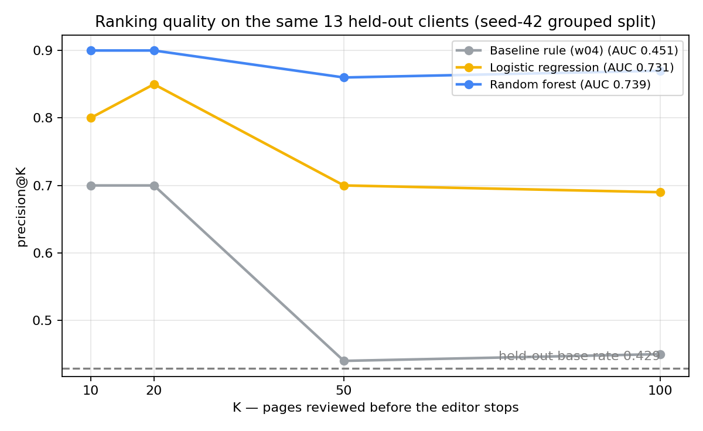
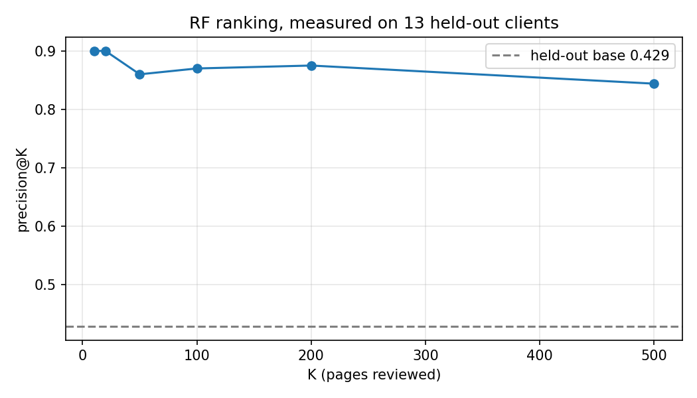
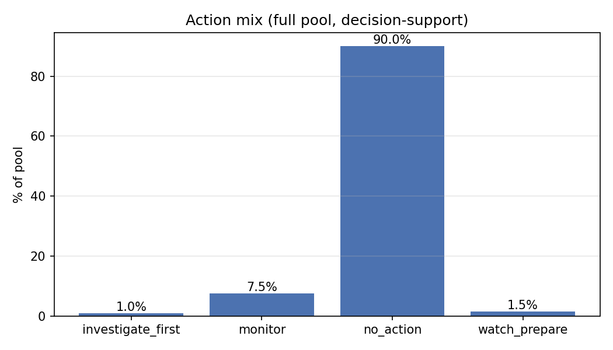

Search Intelligence · Capstone Research
Abstract. When a content editor can only review a handful of pages, which of a portfolio's already-visible pages deserve attention first? On a public, anonymized warehouse slice — 100,893 pages across 43 clients, using March 2026 Search Console facts and an April outcome label — we trained a Random Forest and scored it against a transparent rule baseline on a held-out set of whole clients. On the same held-out clients the forest ranked decline-risk pages at precision@50 0.86 (rule baseline 0.44; chance 0.43), under a grouped-by-client, leakage-audited validation design. The ranking's strongest driver was recent impression momentum, and a deliberate leak probe — adding a future-month feature — showed how badly accuracy inflates when the outcome window leaks into features (P@50 1.00, AUC 0.995). The result is a ranked content action playbook: a short, human-reviewed queue with reason codes, limits, and monitoring triggers — decision support for the editor, not a traffic forecast.
An editor opens the month and sees a list of under-performing pages. Their instinct is to review the pages that lost the most traffic last month. We tested that instinct in this work — and it fails. The rule baseline this paper is measured against (identify decliners by raw impression change) scores barely above flipping a coin on held-out clients (AUC 0.451), because a page that just lost traffic is often a page that was already invisible.
The decision this work supports is concrete: which pages should an editor review first, given a budget of a few hundred reviews for a whole client portfolio. The answer needs to be a short, ranked queue, not a wall of dashboards — each row carrying a reason the editor can verify by hand. Lane 2 of the internship program: Refresh / Content Opportunity Scoring.
Economic facts, not click-level logs. The dataset is a pre-aggregated, public-but-gated release (Hugging Face, read token): per-page daily counts of impressions, clicks, position, active days, and content-release dates, partitioned by month. No client names, domains, URLs, or queries appear anywhere in this report; all identities are hashes.
2026-03 partition).gsc_data_available).This slice prints to ~90 MB and runs end-to-end on a laptop in minutes, or in a free Colab over hf://.
Declined next-month: a page whose April impressions fell below 80% of its March impressions. This is a relative decline label — it asks "is this page under-performing its own recent baseline?," the question editors actually act on — which also makes it robust to month-to-month market shifts. April-only; no page contributes both to its decision window and its outcome window.
Nine March-only features (impressions, clicks, CTR, average position, top-3 / page-1 band share, days since last active day, last-7-day impression share of the month, event count, decliner share of the client). No feature reaches into April.
Transparent rule baseline (identify decliners by raw impression fall) vs logistic regression vs Random Forest — all scored on the same held-out clients with class weights to counter the ~49/51 split.
On the same 13 held-out clients, all three approaches, and the base rate visible:
| Model (held-out test) | P@10 | P@20 | P@50 | P@100 | AUC |
|---|---|---|---|---|---|
| Chance (base rate) | 0.43 | 0.43 | 0.43 | 0.43 | 0.50 |
| Rule baseline (impression fall) | 0.70 | 0.70 | 0.44 | 0.45 | 0.451 |
| Logistic regression | 0.80 | 0.85 | 0.70 | 0.69 | 0.731 |
| Random Forest | 0.90 | 0.90 | 0.86 | 0.87 | 0.739 |


Why does the model win? The strongest permutation-importance driver is last-7-day momentum (the share of a page's monthly impressions that arrived in its final week) — a page whose traffic is already decelerating is the one most likely to end the next month down, and that signal is invisible to a raw "biggest faller" rule. The full pipeline, seeds, and receipts live in the notebooks under work/notebooks/.
The queue is the product. Every row of the pool was scored and bucketed into four actions; flags become human-readable reason codes; no row is ever acted on without a person.

| Action | Share of pool | What the editor does |
|---|---|---|
| Investigate first | 1.0% (1,009 pages) | Top pages seen but under-earning; reason code says why (e.g. ctr_gap+momentum_loss). Review the top hundred in one sitting. |
| Watch & prepare | 1.5% (1,514) | Borderline band: draft a refresh while the evidence matures. |
| Monitor | 7.5% (7,567) | Drift-watch only; re-check when the next month closes. |
| No action | 90.0% (90,803) | Leave it; the queue must stay small to stay useful. |
Reason codes are feature-only flags (CTR gap vs the page's position band, lost momentum, inactivity, volume exposure). The most common code on review-first pages was ctr_gap + momentum_loss: a page sitting on page one that is both under-earning clicks and already decelerating — precisely the page an editor should look at first.
What is hard-coded against misuse: no automation flag is ever written (every action is a human to-do, not a trigger); no label or April window enters the exported queue (asserted in the notebook); no silent retrain (a retrain gate checks base-rate and feature-drift probes against closed months, then requires human sign-off); and the sealed June evaluation month is never used for label development.
Everything runs from the public repo — notebooks execute cleanly top-to-bottom on any machine (a miniconda/mamba env works out of the box):
work/notebooks/w03_model_features.ipynb — warehouse scan, pool definition, feature build, leakage test #1.work/notebooks/w04_baseline.ipynb — the rule baseline and its receipts.work/notebooks/w05_model_build.ipynb — models, grouped split, exact metrics behind the table above.work/notebooks/w06_validation_audit.ipynb — random-vs-grouped overlap audit, leak trap, claim rewrites.work/notebooks/w07_action_playbook.ipynb — the deployed queue, reason codes, monitoring probes, exports.Metrics receipts (work/outputs/w0X_*_metrics.json) pin every number quoted here; seed 42 throughout. The data read requires the (free, 2-minute) warehouse access on Hugging Face.
Built on the FlyRank ML Internship dataset — a public, per-page, daily economic-signal release for search & discoverability research. Grateful to the internship team for shipping a real warehouse, an honest progress-tracker, and a task list with a paper at the end of it.